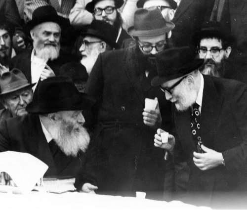

Lessons of a Shliach on the Road
Last month we sustained the loss of a precious remnant of the previous generation of Chabad Chassidim in the United States: Rabbi Yosef Wineberg a”h. He was 94. • R’ Wineberg was chosen by the Rebbe Rayatz to be a shadar (fundraiser) for Tomchei T’mimim Lubavitch. In this capacity, he traveled to do

Rabbi Wineberg was born in Yanov-Lubelski in Poland. In 5694/1934 he went to Yeshivas Tomchei T’mimim in Warsaw, where he became friendly with R’ Yitzchok Hendel. R’ Hendel encouraged and helped him to learn deep maamarei Chassidus when he first arrived. In Warsaw, and later in Otvotsk, he met the Rebbe Rayatz and immediately became his devoted Chassid.
When World War II began, R’ Wineberg learned in Yeshivas Tomchei T’mimim in Otvotsk. When the yeshiva closed, he went back home. But after a few days he left and went to Warsaw in order to be with the Rebbe Rayatz.
YOMIM NORA’IM WITH THE REBBE RAYATZ
That year he spent Tishrei with the Rebbe Rayatz. In a diary, he described that terrible month with the nonstop aerial bombardment by the cursed Germans:
“Erev Yom Tov [Rosh HaShana] is when the bombing began. One bomb hit the Shmotkin house and the house began going up in flames. All the neighbors began running towards the gate of the house. The women and children shrieked and we stood around the Rebbe to ensure that he wasn’t pushed. They brought a chair which the Rebbe sat on. His holy countenance was very serious. A few times he said that firemen should be called. He sat the entire time and murmured something. One of Anash began reviewing Mishnayos by heart out loud; and when he made a mistake, the Rebbe corrected him. Then the Rebbe asked me where the bachurim are and asked that they stand near him. All of them stood around the Rebbe. The Rebbe also inquired about the wife of R’ Shepsel Meir who was pregnant and about a young girl who at first had not been seen in the area.”
R’ Wineberg stayed with the Rebbe during the Aseres Yemei T’shuva, and he was sent several times to bring food for the Rebbe. This was dangerous, as the streets of Warsaw were under constant bombardment. On Yom Kippur morning, when he heard from Rashag that the Rebbe was upset that there wasn’t a proper baal t’filla, he endangered his life and went to fetch R’ Shraga Feivish Zalmanov who davened the rest of the t’filla.
R’ Wineberg told about the meal on Motzaei Yom Kippur:
“After the davening, the entire family ate in the dining room and the Rebbe ate in his room. There wasn’t much to eat, just a k’zayis of challa, since shrapnel had fallen into the meat that I had brought and they were afraid of poisoning. There were only two plates and each person had to eat in turn. When it was my turn to eat, the bombing began. Everybody ran out to sit in the hall and I also left my meal and ran to sit in the hall. Then the Rebbe told me to go and finish eating in the dining room [apparently because it was the meal after the fast].”
The next day, 11 Tishrei, the bombing intensified, the phone lines were cut and in many places there was no water either. R’ Wineberg went to see how his brother was doing. When he got there, the bombing resumed.
“I worried about the Rebbe’s family,” wrote R’ Wineberg, “and I wanted to immediately run back to ascertain that they were okay, but my brother held me back until the bombing was less intense. Only then did I run to the Rebbe. On the way, I tripped time and again over the bodies of people who lay in the streets and I approached the Rebbe’s dwelling with a trembling heart. I nearly fainted when I saw a large hole in the wall of the Rebbe’s room and that all the windows were broken. I was happy to meet Leib Eidelman who told me that all was well with the Rebbe and that he and the family had gone down to the cellar.”
R’ Wineberg told about the t’fillos of the Yomim Nora’im in those days, with the Rebbe:
“That Rosh HaShana too, despite the tremendous confusion, the Rebbe did not abandon routine. He stood in his place with great emotion. His entire being expressed yearning; you hardly heard any of his words and it looked as though the Rebbe was in higher worlds. Despite the not very long t’filla, the Rebbe’s t’filla took about three hours with frightful cries and tremendous spiritual arousal.
“In those days there was a lot to daven for. One thing was lacking, yishuv ha’daas (peace of mind). People did not know what the next day would bring. There was great fear, but the amazing thing was that it all stopped at the Rebbe’s threshold. In the proximity of the Rebbe, there was a different feeling, as though the war had stopped at the threshold. There, we felt like we did in the good days. Although there weren’t many Chassidim, as most of them could not come, and even those who were in the city were protecting their families, the spiritual arousal was considerable. The pace of the t’filla was moderate and it was moving; and the Rebbe’s flaming face ignited a holy fervor within all of us.”
R’ Wineberg, who in later years was the baal t’filla in the Rebbe’s beis midrash in 770, would say that excerpts from that Rosh HaShana in besieged Warsaw with the Rebbe Rayatz were so etched in his memory that later, when he served as chazan, he would review those sections that reminded him of that Yomim Nora’im.
IN SHANGHAI, MONTREAL, AND CHICAGO
During that Tishrei, the Rebbe Rayatz said that all the talmidim should try and reach Vilna which was still independent. R’ Wineberg made it to Vilna, where the bachurim continued learning under the guidance of the mashpia R’ Yehoshua Isaac Baruch.
When the cursed Nazis approached Vilna, the Rebbe Rayatz tried obtaining visas for the talmidim for those countries that were not under Nazi rule, so they could get to the United States. They were able to get entrance permits for a small South American country, and with this permit they went to the Japanese consul, a righteous gentile, who gave them transit visas to Japan.
R’ Wineberg and a group of bachurim traveled to Japan through Russia. After an exhausting trip, they arrived in Japan. When their transit visa expired, they sailed to Shanghai, China. At the time, Shanghai was an international city where people could come and go without documents.
Rabbi Meir Ashkenazi, the rav in Shanghai, warmly welcomed the bachurim. He was a Chassid and mekushar to the Rebbe. R’ Wineberg took charge of the spiritual side of the yeshiva, including contact with the Rebbe Rayatz. The yeshiva maintained a regular learning schedule like in any other Yeshivas Tomchei T’mimim.
A few months after the yeshiva bachurim (and there were hundreds more from other yeshivos, notably the Mirer Yeshiva) arrived in Shanghai, the Canadian government gave visas for talmidim in Shanghai. When he heard about this, the Rebbe Rayatz worked on obtaining many of these visas for his talmidim. In the end, only nine visas were provided for the T’mimim and R’ Wineberg received one of them. The rest of the group consisted of Rabbi Yosef Rodal, Rabbi Aryeh Leib Kremer, Rabbi Yosef Menachem Mendel Tenenbaum, Rabbi Volf Greenglass, Rabbi Moshe Eliyahu Gerlitzky, Rabbi Yitzchok Hendel, Rabbi Yosef Tzvi Kotlarsky and Rabbi Shmuel Stein.
The Rebbe Rayatz sent a telegram to R’ Meir Ashkenazi, asking him to make sure there were nine places on the ship leaving Shanghai so the T’mimim could get to Canada. The ship arrived in S Francisco at the beginning of Cheshvan. On 2 Cheshvan 5702/1941, after a danger-filled, wearisome journey, they arrived in Montreal.
The Rebbe sent them a letter, blessing the T’mimim on their arrival in Montreal and instructing them to open a yeshiva. R’ Wineberg learned there for two years until the Rebbe Rayatz opened Yeshivas Achei T’mimim in Chicago in the summer of 1944 and appointed him to run it. A group of bachurim from New York joined him.
SOWING RUCHNIUS AND HARVESTING GASHMIUS
Some years later, the Rebbe Rayatz gave R’ Wineberg a most important job: to be the shlucha d’rabbanan (shadar) – fundraiser for Yeshivos Tomchei T’mimim Lubavitch. Over the next many years, R’ Wineberg traveled to distant countries, mainly in South America and South Africa, where he sowed ruchnius and harvested gashmius, benefiting the Lubavitcher yeshiva in New York and its branches around the world.
He knew well how to communicate our traditions and Chassidic history. He told numerous Chassidic tales and would ignite the hearts of those who heard him to hiskashrus to the Rebbe. Wherever he went, he spread light and k’dusha. A trip to an obscure European or African country is an opportunity to see if wealthy people who donate towards Jewish causes are also fulfilling mitzvos. A stopover in Dakar – well that’s another opportunity to look for Jews.
In Teves 5710 he had a final yechidus with the Rebbe Rayatz before leaving for South Africa. The Rebbe gave him brachos and instructions, some of which were understood only decades later!
After the passing of the Rebbe Rayatz, he immediately accepted the Rebbe, and while still in South Africa, he convinced the Chassidim there to accept the Rebbe as Nasi HaDor.
R’ Wineberg raised huge sums of money for the Rebbe’s mosdos and projects and gave the Rebbe much nachas. For example, after the Rebbe told the Rashag to build Lubavitcher Yeshiva in Crown Heights, R’ Wineberg was enlisted; he raised millions towards the building on Crown Street.
The Rebbe sent him a letter in 5733/1973 thanking him for the wonderful news that he had been able to obtain a million dollar donation for the Rebbe. In those days (even today), it was an enormous sum. According to legend, the Rebbe used this money to start a fund for Mivtza Kashrus from which the Rebbe paid 50% of the costs when a family wanted to kasher their kitchen. The Rebbe wrote that thanks to this large donation, there was an expansion in his [the Rebbe’s] ruchnius matters, including the saying of a special sicha!
SECRET MISSION TO ERETZ YISROEL
Over the years, R’ Wineberg had the privilege of being the Rebbe’s personal emissary on various important missions, some of which remain unknown till this day. When the Rebbe fought the battle against the unfortunate Israeli law regarding who is a Jew, he sent R’ Wineberg to Prime Minister Golda Meir and to Rabbi Yosef B. Soloveitchik, one of the rabbis of the worldwide Mizrachi movement, in order to persuade him to get the Mafdal ministers in the Israeli government to resign.
One year, the Rebbe had R’ Wineberg visit the Chabad mosdos in Eretz Yisroel and secretly report back to him. The Rebbe did not want people to know that R’ Wineberg was being sent by him for this purpose, and he asked R’ Wineberg to make this trip as though it was a stopover, on his way to another country for fundraising.
When he returned to New York he met with the Rebbe in order to give him a detailed report. At the end of the yechidus, the Rebbe asked him how much his expenses were so he could reimburse him. When R’ Wineberg said he wanted to pay for it himself and he considered this a privilege, the Rebbe responded with a story. The Rebbe Rashab once asked his son to send a telegram for him and later he asked him how much it cost. His son smiled and said it was okay, but his father insisted that the telegram be paid for by public funds. He said, “If you want to give tz’daka, that’s fine, but when it comes to communal matters, don’t do this.” He explained that it says in the Gemara that the High Priest cannot be included in the discussion about whether a leap year is needed or not. This is because he had to immerse several times on Yom Kippur and if they add a month, it would be colder in Tishrei. Thus he might have a bias that would affect his decision. The same is true of communal matters, said the Rebbe Rashab. If a telegram regarding communal matters is paid for by personal money, it could create an unconscious bias.
Each time R’ Wineberg traveled to South Africa, the Rebbe asked him to visit another small country that had a few Jews so he could inspire them to Torah and mitzvos. He visited Uganda and Madagascar and other forsaken places. The Rebbe once asked him to visit Luanda, the capitol of Angola in southwest Africa. When he told the Rebbe he had arranged his trip via Luanda, the Rebbe wrote him a letter which said that if it was worthwhile for the Rebbe Maharash to travel to France in order to save one Jew, it was surely worthwhile for R’ Wineberg. Even though R’ Wineberg did not have a guarantee that he would be successful like [in the story of] the Rebbe [Maharash], he understood that when one goes on the Rebbe’s shlichus there are three levels in shlichus. On the third level the shliach is actually in place of the one who sent him and special abilities are granted to the messenger to carry out the mission.
TANYA SHIUR ON THE RADIO
In Issue 734 of Beis Moshiach there was an article marking 50 years since R’ Wineberg began giving a weekly Tanya shiur on the radio. The article was an interview with R’ Wineberg in which he told how he came to give the shiur, how he prepared for it, and about the Rebbe’s involvement and support. He had the z’chus of being mentioned in the Rebbe’s farbrengen on Shabbos Parshas Mishpatim or the closest farbrengen to it, for that is when the first shiur was given. The Rebbe praised R’ Wineberg’s devotion to this special role and spoke about the advantage in broadcasting Chassidus over the radio.
The Rebbe thought very highly of this Tanya shiur as the following two facts will attest: 1) The Rebbe regularly listened to the shiur and would eat Melaveh Malka while he listened; 2) The Rebbe edited every shiur from beginning to end before it was broadcast, adding many notes and explanations.
When R’ Wineberg passed 90 years of age, he handed over the shiur to his son, R’ Sholom Dovber, shliach in Kansas City.
These shiurim were the basis for the very popular Lessons in Tanya which was published in Yiddish and then was quickly translated into Hebrew by Rabbi Avrohom Chanoch Glitzenstein. It was printed in Israel over twenty times. Every year it is reprinted and each time it is sold out. It was translated into English by his son R’ Sholom Dovber and edited by Uri Kaploun. In recent years, it has been translated into French and Spanish. There are thousands of Jews, some of them not Lubavitch, who learn Tanya thanks to this set of s’farim.
***
R’ Wineberg was a member of the board of Central Yeshiva Tomchei T’mimim Lubavitch and a member of the board of Agudas Chassidei Chabad. He was involved in many of the Rebbe’s projects and campaigns throughout the nesius.
He is survived by his wife, Rebbetzin Chana Wineberg; his sons Rabbi Sholom Ber Wineberg, shliach to Kansas City, Missouri; Rabbi Avrohom Wineberg, shliach to Bloomfield, Michigan; Rabbi Yitzchok Wineberg, Shliach to Vancouver, Canada; Rabbi Levy Wineberg, Shliach and Rav of Johannesburg, South Africa; and his daughter Mrs. Freidy Yanover of Crown Heights.
Avremele Rainitz. "Lessons of a Shliach on the Road." Beis Moshiach, no. 843 (July 27, 2012).